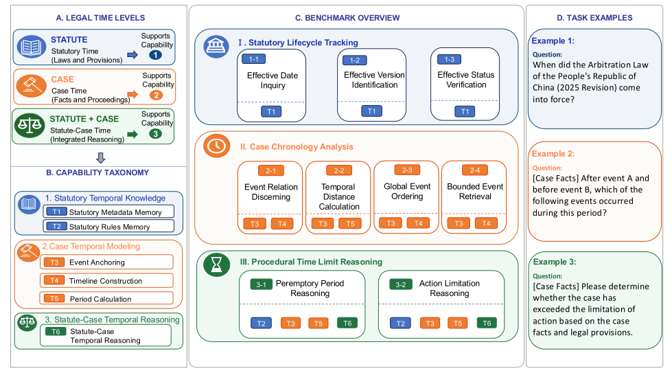
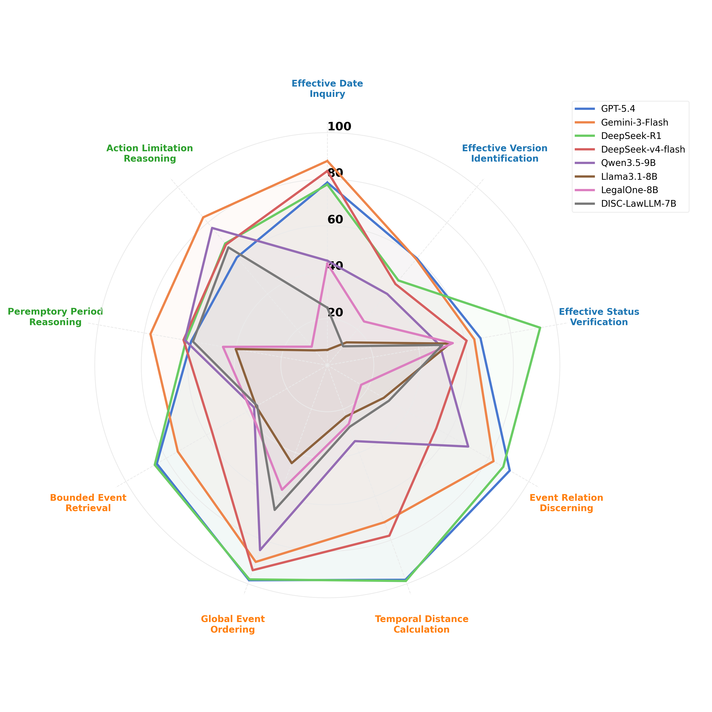
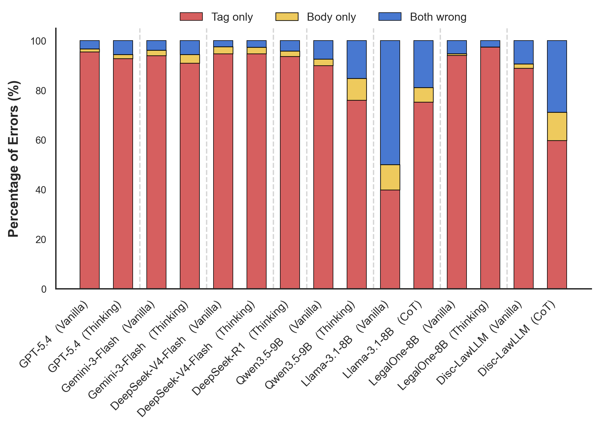
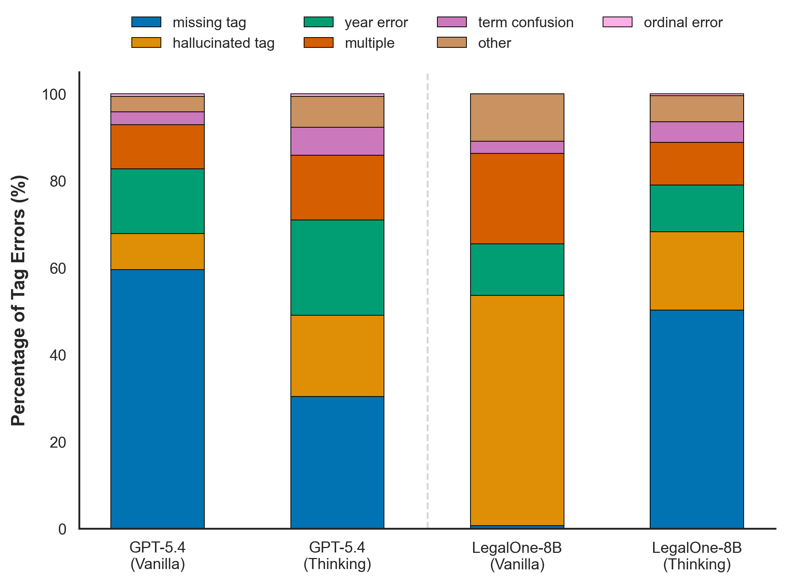

一句话读懂这篇论文
三层能力：规则的时间、事实的时间、两者的交汇

LexKairos 将时间能力映射为三个层次，并进一步拆成九个可测子任务。
法条时间知识
记住法律的公布、生效、失效、修订版本，以及法条规定的期间和时效。案件时间建模
从叙述中锚定事件、计算间隔、重建全局顺序并检索时间区间内的事件。条文—案件联合推理
把事实发生时间与法定期间结合，判断权利是否消灭或诉讼是否超过期限。时间是法律系统中相对确定、可验证的结构：一个日期、一个版本号或一个期限边界错了，后续法律结论可能整体失效。
九个子任务覆盖从记忆到联合推理
1-1 查询版本生效日期；1-2 判断某时间点生效的版本；1-3 验证指定版本在某时点是否有效。
2-1 判断事件关系；2-2 计算日历天数；2-3 重排全局事件；2-4 检索两个锚点之间的事件。
3-1 判断除斥期间是否届满；3-2 判断诉讼时效是否超过。两者都要求同时使用法条和案件事实。
| 主任务 | 子任务数 | 代表性数据量 | 核心能力 |
|---|---|---|---|
| Statutory Lifecycle Tracking | 3 | 452–485 | 法条版本与状态 |
| Case Chronology Analysis | 4 | 450–594 | 事件锚定、排序、计算 |
| Procedural Time Limit Reasoning | 2 | 109–180 | 时效与期限适用 |
不同时间问题采用不同的数据构造策略
任务 1 从法律条文元数据中规则合成并人工过滤；任务 2 基于经过验证的民事案件，通过事件抽取和 SQL 生成问答；任务 3 使用 LLM 信息抽取、规则筛选与专家法律审查的混合流程。
法条版本、颁布/生效日期、有效状态和法定期间等元数据。
真实裁判文书中的事件时间、事件关系、时间区间与关键法律节点。
这种分层构造避免把“时间推理”简化成普通日期算术：真正困难的是确定哪个日期重要、哪一版法律有效，以及期限规则如何作用于事实。
Thinking 模式有效，但不能消除时间盲区

模型在三类主任务上的能力分布并不均衡；案件时间线通常高于法条时间知识和程序期限推理。
| 模型/设置 | 总体 | T1 法条 | T2 案件 | T3 期限 |
|---|---|---|---|---|
| Gemini-3-Flash Thinking | 84.57 | 85.77 | 92.92 | 74.44 |
| GPT-5.4 Thinking | 82.75 | 80.62 | 92.80 | 69.44 |
| DeepSeek-R1 | 79.78 | 77.73 | 87.37 | 61.67 |
| Qwen3.5-9B Thinking | 69.79 | 58.95 | 87.67 | 57.22 |
几乎所有模型在 T2 案件时间线任务上的表现更好，说明从事实叙述中建立时间关系相对容易；T1 的版本元数据记忆和 T3 的期限联合推理更接近真实法律风险。Thinking 对弱模型提升尤其明显：LegalOne-8B 从 vanilla 的 35.33 提升到 73.00。
版本识别的主要问题不是找不到法条，而是版本标签出错

Effective Version Identification 的错误分解：tag-only 错误占主要部分，模型通常找到了法条主体，却给不出准确版本标识。
vanilla 下主要是 missing tag，版本号经常被省略；Thinking 后会更多尝试生成标签，但也带来额外幻觉。
vanilla 下主要是 hallucinated tag，在没有依据时生成版本标识；Thinking 可以显著改善总体分数。

同一个“tag-only”大类内部还包含缺失、幻觉、年份、术语和序号等不同错误，不能只看一个 aggregate accuracy。
对法律 Agent 的三个实践启示
法条检索不仅要返回相关条文，还要返回版本、生效区间和适用时间点；否则召回了“对的法条”也可能是错的版本。
先抽取事件、锚点、区间和关系，再将其交给期限推理模块，避免模型在长叙述中直接凭直觉判断时效。
版本号缺失和版本号幻觉是两类不同风险，评测和线上监控应分别统计。
局限与边界
最重要的结论不是某个模型排名，而是法律时间应被作为独立能力测量：规则版本、事实时间线和程序期限是三种不同的错误来源。